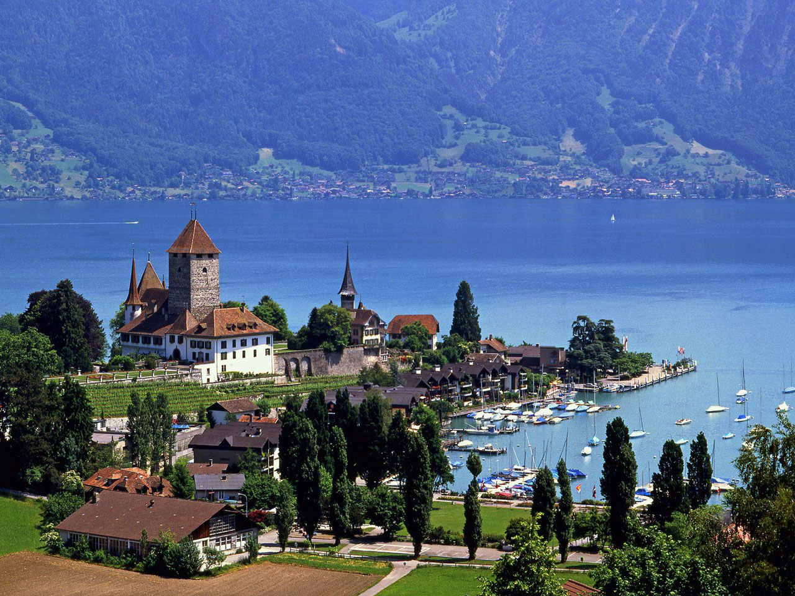
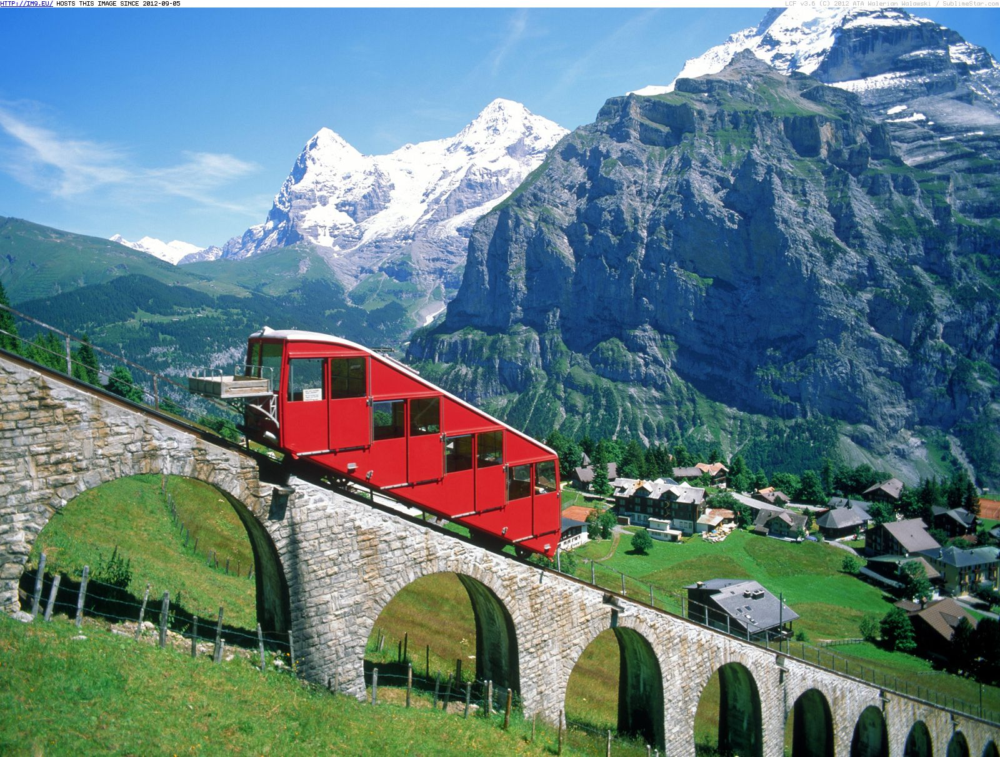

Home | Bands | Hobby | Favorite Vacation
I have always loved traveling, especially to places outside of the country. Both the natural grandeur of the location and historical structure of the cities are what draws me in the most. Below, are my two favorite European countries that I have visited in the past, on that I spent six weeks in and the other that I spent 2 hours in.
I’ve traveled quite a lot over the years, most of it is involuntary, and I have found that it can be liberating to visit new places. Of these places I’ve visited, one has stuck out the most. My favorite vacation place is the UK.
Away Resorts includes information about the United Kingdom’s Away Resorts including, package plans, different park locations, and sale information. It also shows the ways that a customer can stay at the resort and the accompanying accommodations. There is an entire page dedicated to discounts that can be applied to a trip. This website also includes an FAQ section that answers many of the questions that a customer would have.
GREAT Britain has information regarding visiting all of Great Britain. You can divide your search what region of Great Britain you would like to visit or what you would like to do. There are several lists that rank the popularity of certain locations and types of food. There is a link that leads directly to Practical Information that a traveler should have while in Britain. The website also includes hotel planning and offers discounts for activities in the area.

My second favorite vacation that I have taken was also the shortest. On a tour around Europe, my family briefly stopped in Switzerland. We spent less than two hours there, but I immediately fell in love with the sight of the mountains and the coolness of the summer air. Switzerland officially called the Swiss Confederation, is home to some of the best-made dairy products in the world.
My Switzerland has information regarding visiting Switzerland. You can your search the destinations that you can visit and what you would like to do while you are there. There is a tab that offers different forms of transportation and how to accommodate for guests with special needs. This website also includes general information about the country of Switzerland including the culture and geographical regions. There is a portion of the homepage dedicated to "Expert Tips" that lists the best places to visit.

Rough Guides follows almost the same format of the first website. It lists information that would be pertinent to planning a trip to Switzerland. "Essentials" links to facts about Switzerland, general accommodations, food and drinks, and visitors etiquette. The print version of the website can be purchased for offline use. Several galleries portray the natural beauty of the nation. There are recommendations for what locations you might like to visit after Switzerland.